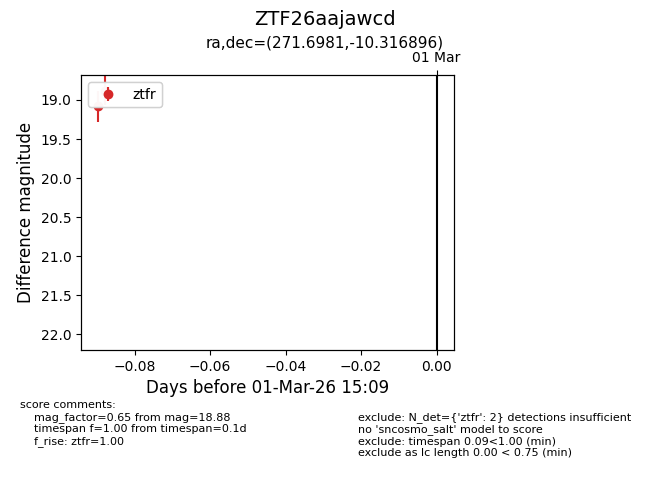
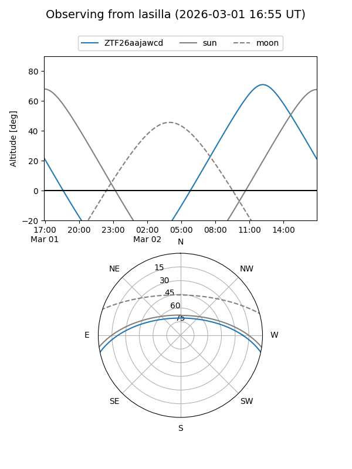
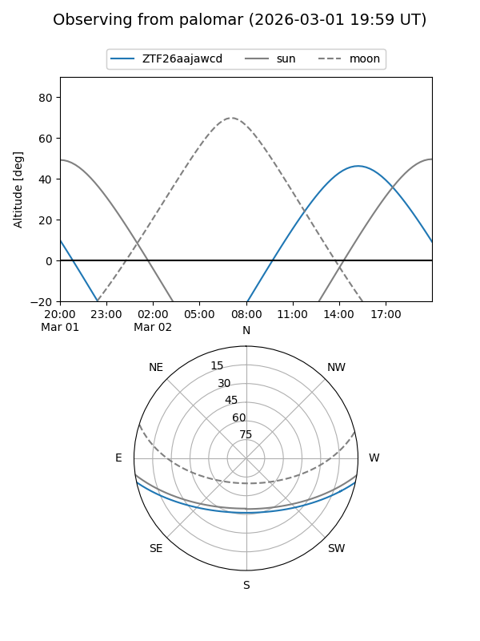

ZTF26aajawcd
Target ZTF26aajawcd at 2026-03-01 15:10
Aliases and brokers:
FINK: link
Lasair: link
ALeRCE: link
alt names
ZTF26aajawcd (ztf,fink_ztf)
Coordinates:
equatorial (ra, dec) = 271.6981,-10.31690
equatorial (HMS+DMS) = 18:06:47.54,-10:19:00.82
galactic (l, b) = (18.6210,+5.03875)
Flags:
Photometry:
last ztfr=18.88
2 ztfr detections
Lightcurve

Visibility


Additional plots